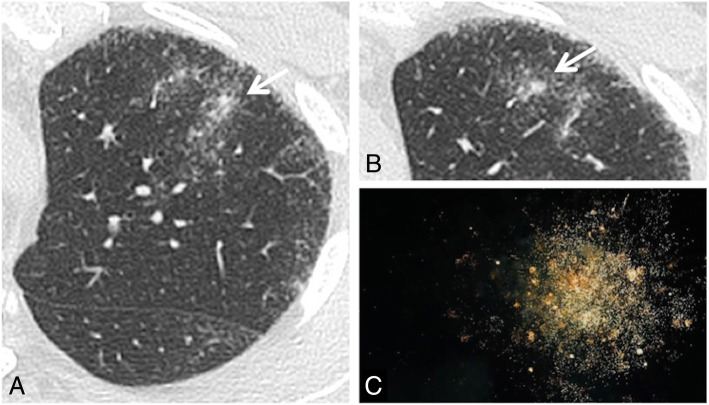
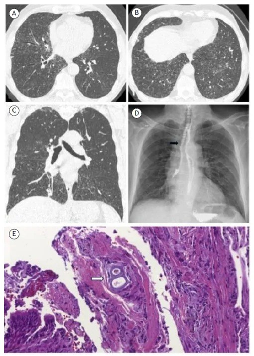
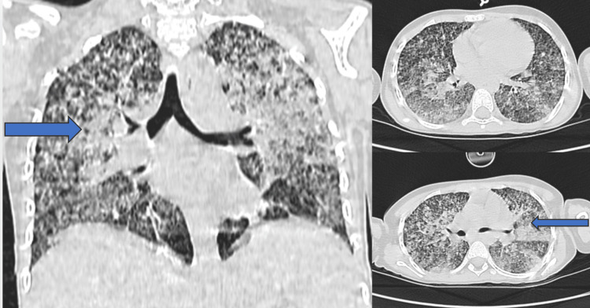
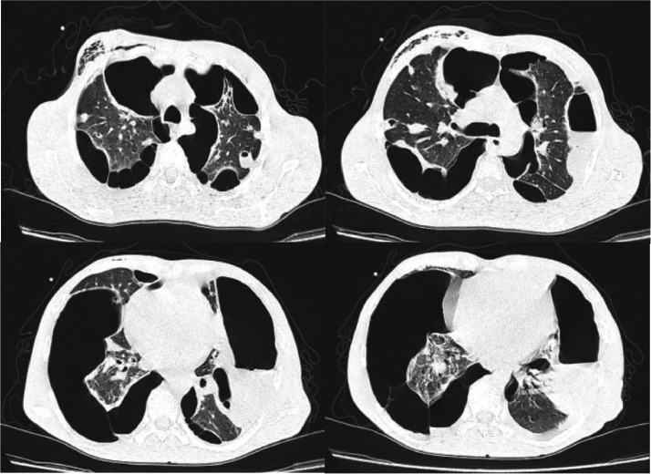
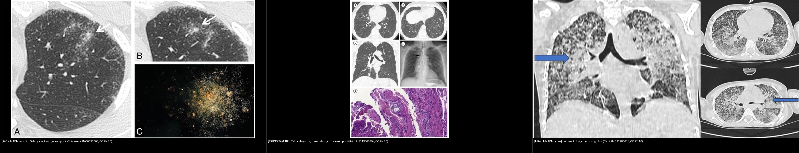

021 — Đa nốt phổi: trung tâm tiểu thùy / bạch mạch / ngẫu nhiên / Multiple nodules distribution
Tags: pattern:not-da-o vung:phoi
Mức chắc chắn (certainty): tổng hợp y văn (literature synthesis) — nhóm tự biên từ y văn mở, chưa gắn ca nguyên văn đơn lẻ.
1. Tổng quan — phân bố quyết định gamut
- Nốt đơn (bài 020) hỏi "lành hay ác"; đa nốt hỏi "phân bố nào" trước: trung tâm tiểu thùy (centrilobular) = đường thở; bạch mạch (perilymphatic) = vách/màng phổi/rốn; ngẫu nhiên (random) = máu.
- TẠI SAO: lao/nhầy lấp tiểu PQ → nốt trung tâm + tree-in-bud; sarcoid/lao lan bạch mạch → nốt vách + màng phổi + galaxy; lao kê/di căn máu → nốt ngẫu nhiên đều 2 phổi cả sát màng phổi.
- Ngưỡng: nốt vệ tinh (satellite) quanh hang/tổn thương chính + tree-in-bud = hoạt tính lao; galaxy > 1 cm + vệ tinh = sarcoid.
2. Gamut 3 phân bố
- Trung tâm tiểu thùy: lao nội phế quản, MAC, viêm tiểu PQ, hít — tree-in-bud, chừa màng phổi (cách màng vài mm).
- Bạch mạch: sarcoid (galaxy, hạch rốn 2 bên), lao bạch mạch, bụi phổi — nốt dọc vách + dưới màng phổi + quanh rốn.
- Ngẫu nhiên: lao kê (kê 1–3 mm đều), di căn máu (đa kích thước, đáy), thuyên tắc nhiễm khuẩn (feeding vessel, hang nhanh).

Nhân đặc trung tâm + nốt nhỏ quanh (sarcoid) + hình thiên hà đối chiếu. Nguồn: Chiarenza et al., Insights into Imaging 2019 Fig. 15, CC BY 4.0.
Panel A–C: vô số vi nốt trung tâm tiểu thùy hai bên tạo tree-in-bud, chừa màng phổi (viêm tiểu phế quản hít sặc lan tỏa). Nguồn: Bridi G et al., Respir Res Clin Pract 2026, PMC13568794 Fig. 1, CC BY 4.0.
Phân bố ngẫu nhiên: vi nốt đều hai phổi chạm cả màng phổi và cả vùng đáy — lao kê (miliary TB). Nguồn: Talbi H et al., Cureus 2026, PMC13286614 Fig. 1, CC BY 4.0.
Phân bố ngẫu nhiên theo mạch máu (thuyên tắc nhiễm khuẩn): nốt/hang ngoại vi hai bên, kèm tràn khí màng phổi phải (bệnh cảnh viêm nội tâm mạc). Nguồn: Nasreddine F et al., Radiol Case Rep 2026, PMC13393430 Fig. 1, CC BY-NC-ND 4.0 (giữ nguyên bản).
Ba phân bố cạnh nhau: bạch mạch (galaxy/sarcoid) — trung tâm tiểu thùy (tree-in-bud) — ngẫu nhiên (lao kê). Nguồn: Chiarenza et al., PMC6893008 (CC BY 4.0) + Bridi G et al., PMC13568794 (CC BY 4.0) + Talbi H et al., PMC13286614 (CC BY 4.0). Ảnh ghép letterbox.3. Bảng so sánh
| Thực thể (entity) | Hình ảnh điển hình (HRCT) | Chốt vào (rule-in) | Chốt loại (rule-out) | Gợi ý xác nhận |
|---|---|---|---|---|
| Lao (trung tâm) | Tree-in-bud + nốt vệ tinh quanh hang, trên | Tree-in-bud + hang trên | Nốt dọc vách/màng phổi → bạch mạch | AFB/PCR |
| Sarcoid (bạch mạch) | Galaxy > 1 cm + nốt vách/màng phổi + hạch rốn 2 bên | Galaxy + hạch rốn đối xứng | Ngẫu nhiên đều + không hạch → kê/di căn | ACE, sinh thiết hạch |
| Lao kê/di căn (ngẫu nhiên) | Nốt ngẫu nhiên đều cả sát màng phổi | Đều 2 phổi + chạm màng phổi | Chừa màng vài mm → trung tâm tiểu thùy | Tìm ổ nguyên phát, máu |
| Thuyên tắc NK | Nốt ngoại vi + feeding vessel + hang nhanh | Mạch nuôi + sốt + ổ nhiễm | Không mạch nuôi → u hạt thường | Cấy máu, siêu âm tim |
4. Protocol
- HRCT lát mỏng 1–1,5 mm + MIP 5–10 mm (đếm nốt, thấy tree-in-bud/vessel rõ hơn).
- Nghi lao kê: X-quang chưa thấy không loại trừ — HRCT nhạy hơn nhiều.
- Nghi di căn: CT toàn thân tìm nguyên phát + PET.
5. Cạm bẫy
- Nốt cạnh mạch cắt ngang giả nốt trung tâm — cuộn MPR xem cuống mạch.
- Khoảng cách tới màng phổi là mấu chốt phân bố: trung tâm tiểu thùy chừa màng phổi ~2–5 mm; ngẫu nhiên chạm màng phổi — đừng gọi "trung tâm tiểu thùy" khi nốt sát màng phổi.
- Galaxy lao cũng có (kèm tree-in-bud) — đừng chốt sarcoid khi có tree-in-bud.
- Thuyên tắc nhiễm khuẩn đổi RẤT nhanh: nốt → hang → tràn khí trong vài ngày; chụp lại sớm, đừng "chờ ổn định".
- Miliary TB X-quang sớm bình thường — lâm sàng nặng + X-quang mờ nhạt = chụp HRCT.
6. Tự lượng giá — Blind Quiz
Ca 1 — Nhìn lưới 3 phân bố, gọi tên từng phân bố TRƯỚC khi mở đáp án.
- Hỏi: mỗi ô là phân bố nào? Dấu hiệu nào chốt phân bố (bạch mạch / trung tâm tiểu thùy / ngẫu nhiên)?
Bấm để hiện đáp án (findings + chẩn đoán)
- Ô 1 = phân bố bạch mạch (galaxy/sarcoid): nốt dọc vách + quanh rốn + dưới màng phổi, nhân trung tâm > 1 cm có nốt vệ tinh.
- Ô 2 = phân bố trung tâm tiểu thùy (tree-in-bud): vi nốt cách màng phổi vài mm, gắn nhánh phế quản/động mạch nhỏ hình "cây ra chồi".
- Ô 3 = phân bố ngẫu nhiên (lao kê): vi nốt đều hai phổi, chạm cả màng phổi, phân bố theo mạch máu.
- Nguồn ảnh: Chiarenza et al., PMC6893008 + Bridi G et al., PMC13568794 + Talbi H et al., PMC13286614 (đều CC BY 4.0).
Ca 2 — Sốt nhẹ kéo dài, HRCT vi nốt hai bên. Phân bố nào? Nốt có chạm màng phổi không?
- Hỏi: nốt nằm ở đâu so với màng phổi? Có nhánh nào gắn vào nốt? DDx ưu tiên?
Bấm để hiện đáp án (findings + chẩn đoán)
- Dấu hiệu: vô số vi nốt trung tâm tiểu thùy hai bên tạo tree-in-bud, chừa màng phổi vài mm, tập trung quanh nhánh phế quản–động mạch nhỏ.
- Chẩn đoán (phân bố): trung tâm tiểu thùy = bệnh đường thở nhỏ → lao nội phế quản (hoạt tính), MAC, viêm tiểu phế quản hít sặc.
- Nguồn ảnh: Bridi G et al., Respir Res Clin Pract 2026, PMC13568794 Fig. 1, CC BY 4.0 (ca viêm tiểu phế quản hít sặc lan tỏa).
Ca 3 — Nam trẻ, gầy sút, sốt. CT ngực vi nốt đều 2 phổi. Phân bố nào? Chẩn đoán?
- Hỏi: nốt phân bố theo cấu trúc nào? Có chạm màng phổi? Nghĩ bệnh gì? Xác nhận?
Bấm để hiện đáp án (findings + chẩn đoán)
- Dấu hiệu: vi nốt đều hai phổi, chạm cả màng phổi, không ưu thế trung tâm tiểu thùy hay vách → phân bố ngẫu nhiên (theo mạch máu).
- Chẩn đoán: lao kê (miliary TB) — nốt 1–3 mm rải đều; xác nhận bằng AFB/PCR + CT ngực. (DDx: di căn máu — thường đa kích thước hơn, đáy).
- Nguồn ảnh: Talbi H et al., Cureus 2026, PMC13286614 Fig. 1, CC BY 4.0.
Ca 4 — Bệnh nhân sốt + tiếng thổi tim, CT ngực nốt/hang ngoại vi hai bên. Phân bố? Cơ chế?
- Hỏi: vì sao nốt ngoại vi? Dấu hiệu nào gợi mạch máu chứ không phải màng phổi? Biến chứng thấy trên ảnh?
Bấm để hiện đáp án (findings + chẩn đoán)
- Dấu hiệu: nhiều nốt/hang ngoại vi hai bên, + tràn khí màng phổi phải và dày màng phổi.
- Chẩn đoán: thuyên tắc phổi nhiễm khuẩn (septic pulmonary emboli) từ viêm nội tâm mạc — nốt phân bố ngẫu nhiên theo mạch máu, nhanh hoại tử thành hang, hay vỡ gây tràn khí.
- Cơ chế: mảnh sùi nhiễm khuẩn theo dòng máu; hang do hoại tử + nốt thường đổi nhanh qua vài ngày.
- Nguồn ảnh: Nasreddine F et al., Radiol Case Rep 2026, PMC13393430 Fig. 1, CC BY-NC-ND 4.0 (giữ nguyên bản).
Ca 5 — Nhìn HRCT, gọi phân bố trước.
- Hỏi: nhân trung tâm + nốt quanh là dấu gì? Bạch mạch hay ngẫu nhiên? Kèm hạch rốn thì nghĩ gì?
Bấm để hiện đáp án
- Galaxy sign — sarcoid (bạch mạch): nhân > 1 cm + nốt vệ tinh dọc vách; hạch rốn 2 bên đối xứng củng cố.
- Nguồn: Chiarenza et al., Fig. 15, CC BY 4.0.
Bài liên quan chéo
- 001 – Tổng quan hệ Ngực
- 011 – Tiểu thùy thứ cấp (trung tâm tiểu thùy vs bạch mạch)
- 013 – Hạch nội phổi trạm 11–14 (nốt đơn cạnh rãnh)
- 020 – Nốt phổi (nốt đơn)
- 031 – Viêm phổi mẫu hình (lao, tree-in-bud)
Không dùng để chẩn đoán độc lập khi chưa có người hướng dẫn.